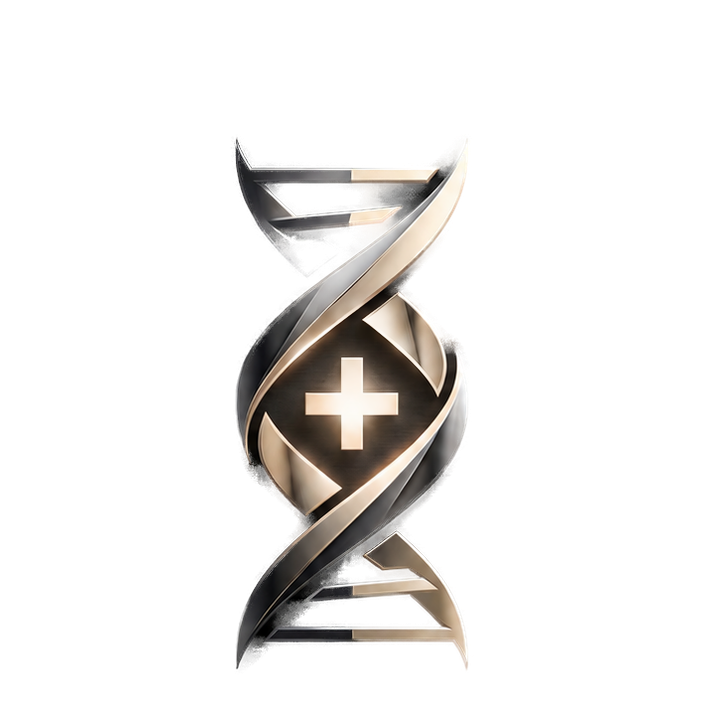

永続する事業
一時的な流行や単発の制作ではなく、会社が続いていくための仕組みを考えます。

HELiXPLUSCOMPANY
HELiXPLUSは、中小企業のIT相談を入口で切り捨てず、課題の整理、実装、運用改善まで進める会社です。専門用語で煙に巻かず、経営者と現場が判断できる形に落とします。
BRAND CONCEPT
Helixは螺旋、DNA、二重構造、続いていく流れ。Plusは、事業や価値が増えていくこと。その意味を、単なる説明ではなく、Web、業務、開発、IT基盤までつながる支援領域として設計しています。
一時的な流行や単発の制作ではなく、会社が続いていくための仕組みを考えます。
相談内容を聞き、論点、優先順位、次の一手を明確にして進めます。
ホームページ、DX、アプリ、業務改善、営業導線まで、困りごとの入口を限定しません。
PROFILE
CONTACT
今の業務で面倒なこと、ミスが起きやすいこと、見える化したいことを、業種、現状、困っている場面と一緒に送ってください。